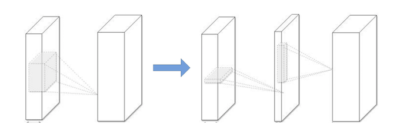

Deep convolutional neural networks (CNNs) have recently achieved great success in many visual recognition tasks. However, existing deep neural network models are computationally expensive and memory intensive, hindering their deployment in devices with low memory resources or in applications with strict latency requirements. Therefore, a natural thought is to perform model compression and acceleration in deep networks without significantly decreasing the model performance. During the past few years, tremendous progress has been made in this area. In this paper, we survey the recent advanced techniques for compacting and accelerating CNNs model developed. These techniques are roughly categorized into four schemes: parameter pruning and sharing, low-rank factorization, transferred/compact convolutional filters, and knowledge distillation. Methods of parameter pruning and sharing will be described at the beginning, after that the other techniques will be introduced. For each scheme, we provide insightful analysis regarding the performance, related applications, advantages, and drawbacks etc. Then we will go through a few very recent additional successful methods, for example, dynamic capacity networks and stochastic depths networks. After that, we survey the evaluation matrix, the main datasets used for evaluating the model performance and recent benchmarking efforts. Finally, we conclude this paper, discuss remaining challenges and possible directions on this topic.
Deep networks with billions parameters, GPUs with high computation capability. Two example: ImageNet, LFW dataset. Reducing storage & computational cost is critical, for real-time app. Solutions from many disciplines: ML, optimization, computer arch, data compression, indexing, hardware design.
FC layer is bottleneck of memory. f(x,M)=σ(Mx), while x is input, σ(⋅) is nonlinear operator, M is m×n matrix of paramters.
Structured matrix: an m×n matrix can be described using much fewer parameters than mn; which can reduce memory cost & accelerate inference and training stage. A simple & efficient approach is based on circulant projections. Given r=(r0,r1,…,rd−1), a circulant matrix R∈Rd×d is defined as:
A typical framework of the low-rank regularization method
Convolution kernel can be viewed as a 4D tensor. There is a significant amount of redundancy in the 4D tensor, while tensor decomposition can remove the redundancy.
Some methods:
History: high dimensional DCT; wavelet systems.
Learing separable 1D filters after dictionary learning idea.
Low-rank approximation and clustering schemes for the convolutional kernels achieved 2x speedup with 1% accuracy drop. Different tensor decomposition schemes reports 4.5x speedup with 1% accuracy drop in text recognition.
Canonical Polyadic decomposition: using nonlinear least squares. Batch Normalization decomposition: transforming the activation of the internal hidden units. Both can be used from scatch.
Also, the fully connected layers can be viewed as 2D matrix. There are several works exploiting low-rankness in fc layer.
Drawbacks: implementation not easy while decomposition is computationally expensive; current methods is layer-by-layer, but not global parameter compression; model retraining.
The translation invariant property and the convolutional weight sharing are important.
Equivalence:
T′Φ(x)=Φ(Tx)
while x is input, Φ(⋅) is network or layer, T is transform matrix. Applying certain transform T to a small set of base filters to get a large set of convolutional filters.
CRELU: Negation function: T(Wx)=Wx−, where Wx is basis convolutional filter and Wx−
is shifts whose activation is opposite. This work achieve 2x compression rate and higher accuracy. Intuition: pair-wise positive-negative constraint more useful.
MBA: Multi-bias nonlinearity activation function: T′Φ(x)=Wx+δ, where δ are multi-bias factors.
CIRC: Combination of rotation: T′Φ(x)=WTθ, where WTθ is transformation matrix.
DCNN: Set of translation functions: T′Φ(x)=T(⋅,x,y)x,y∈{−k,…,k},(x,y)=(0,0), where T(⋅,x,y) denoted the translation of the first operand by (x, y) along its spatial dimensions. This framework can improve accuracy and achieve paramter efficiency.
Drawbacks: 1) competitive performance for wide/flat architectures but not thin/deep ones 2) results unstable in some cases
To replace the loose and over-parametric filters filters with compact blocks will improve the speed. Decomposing 3x3 convolution with 1x1 ones achieved significant acceleration and SqueezeNet created a compact neural network with 50 fewer parameters to AlexNet.
Compress deep and wide networks into shallower ones, where the compressed model mimick the function learned by the complex model. Shift knowledge from a large teacher model into a small one by learning the class distributions output via softmax.
Hinton: student-teacher paradigm; student is penalized by teacher's output; compress ensemble of teacher networks into a student network of similar depth.
FitNets: train thin but deep networks to compress wide and shallower networks; make the student mimic the full feature maps of the teacher.
Train a parametric student model to approximate a Monte Carlo teacher, using online training and DNN for student.
Represent knowledge by using higher hidden layer neurons: same information but more compact.
Attention Transfer: transfer summaries of the full activations.
Drawbacks: KD-based methods can only be applied to classification tasks with softmax loss function. And the model assumptions are too strict to make the performance competitive with other type of approaches.
ABM reduces computations significantly by learning to seletively focus on a few task-relevant input regions.
Dynamic capacity network combines two modules: small sub-networks with low capacity & large ones with high capacity. The first ones are active on full input to find the task-relevant areas, then the attention mechanism direct the last ones to focus-on the task-relevant regions.
Conditional computation: sparsely-gated mixture-of-experts layer(MoE) which consisted of experts, each a feed-forward neural network; using a trainable gating network to select combination of experts to process input.
Dynamic DNN: select and execute a subset of D2NN neurons based on input.
Replacing FC with Global Average Pooling
Stochastic depth: target Residual Network based model. Pyramidal residual networks with stochastic.
Dynamically choose layers to excute during inference.
FFT based convolutions; Fast convolution using Winograd algorithm.
Stochastic spatial sampling pooling; Detail-preserving pooling based on inverse bilateral filters.
Some suggestions, challenges and possible solutions.
Learing-to-learn strategies can automatically learn how to exploit structure in the problem of interest. Leveraging reinforcement learning efficiently to sample the design space and improve the model compression.
Training-based channel pruning methods focus on imposing sparse constraints on weights during training.
For knowledge distillation, selective-KD could be helpful.
Neural networks are both computationally intensive and memory intensive, making them difficult to deploy on embedded systems. Also, conventional networks fix the architecture before training starts; as a result, training cannot improve the architecture. To address these limitations, we describe a method to reduce the storage and computation required by neural networks by an order of magnitude without affecting their accuracy by learning only the important connections. Our method prunes redundant connections using a three-step method. First, we train the network to learn which connections are important. Next, we prune the unim- portant connections. Finally, we retrain the network to fine tune the weights of the remaining connections. On the ImageNet dataset, our method reduced the number of parameters of AlexNet by a factor of 9×, from 61 million to 6.7 million, without incurring accuracy loss. Similar experiments with VGG-16 found that the total number of parameters can be reduced by 13×, from 138 million to 10.3 million, again with no loss of accuracy.
Dropout: As pruning already reduced model capacity, the retraining dropout ratio should be smaller.
Ci=NiNi−1Dr=DoCioCir
During retraining, keep the surviving parameters instead of re-initializing them. To prevent the vanishing gradient problem, fix the parameters for CONV layers and only retrain the FC layers after pruning the FC layers and vice versa.
Iterative pruning can boost pruning rate from 5x to 9x on AlexNet compared with single-step aggresive pruning. The neurons with zero input or zero output connections may be safely pruned due to gradient descent and regularization.
{kind=link}
{kind=link}